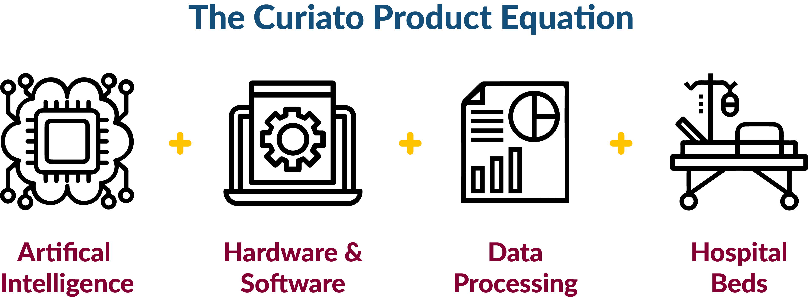
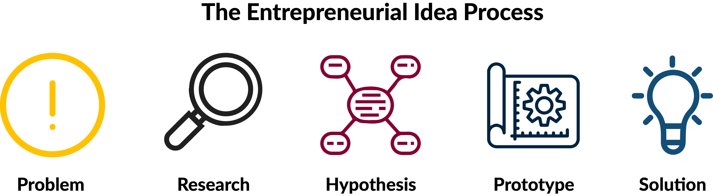

You commonly mention that every single hour seven people around the world die from bed sores. Why isn’t this issue more talked about?
Moazam Khan: Because its not sexy! When you look at the problem of bed sores, it’s a $20 billion problem in North America alone. It’s not that it’s not talked about – it’s just that it’s only spoken of in very specific circles. For example, it’s a very big problem recognized among nurses and hospital administrations. What Curiato does is we address those problems and we work with nurses and hospitals to understand their needs. We then solve those issues with the technology we’re building.
Q: When it comes to identifying problems, Curiato’s big solution is to tackle the bedsore epidemic. What was the process like moving from the identified problem to building a product to solve that?
Moazam Khan: It’s not an easy process. For Curiato, it involved integrating many different disciplines: clinical research, medical research, hardware, software, AI and data processing. These were all very intricate details that we had to be attentive to. Fortunately, we’re past that stage now because we focused early on in recruiting the best talent for our company.
As we’ve been able to grow our company, we’ve been very lucky to attract some brilliant people: from ex-professors, to industry leaders that understand the core technology and can prove its applications in a clinical setting. Something we also did was we took advantage of the ecosystem. The Waterloo-Toronto corridor is a brilliant environment for entrepreneurs. In Waterloo, we’ve had a lot of exposure to talent in technical fields like engineering, and computer science. Similarly, in Toronto, we’ve been supported very generously by the Toronto Grace Health Centre by their nurses and staff expertise. Another institution we’ve been supported by has been the Centre for Aging Brain Health Innovation. They’ve helped us a lot on the research side, the clinical side, and the business side.
Very early on you should recognize what you want to build and what goes into building that technology. If you don’t have the core competencies personally, then you believe in the vision, and recruit people to join you. We have people that have come from much bigger companies just because they believe in the vision, and understand the impact the technology can have on many people’s lives.
Could you tell us a little bit more about Curiato's product?
Moazam Khan: The current industry protocol is to move patients every three hours so that they don’t develop bedsores. What Curiato does is we provide the information hospitals need to make proactive decisions rather than reactive decisions. Bedsores are preventable! Very simply put, if there’s not EKG monitor in a hospital, then the doctors and nurses won’t know if your heart is at risk of failure. Similar in functionality to an EKG, we collect skin data, and we’re able to tell if a patient is at risk of a potential bed sore. Bed sores are just one of the many applications we’re working on right now. Our ultimate goal is to work with nurses to ease the workload of nurses, to ease the quality of life of patients, and reduce workload for nurses and save costs for hospitals.
Throughout your professional career, you’ve been involved in many roles that lie at the intersection of healthcare and entrepreneurship. What was it about that intersection that attracted you to it?
Moazam Khan: I’ve always been interested in healthcare from day one. The field has a lot of big problems, and that is something my co-founders and I love solving. The beauty of going to Waterloo was that it emphasized all the big problems, and that gave us the push we needed towards the field of healthcare. We were interested specifically in how technology can alleviate issues in healthcare because technology, especially data driven technologies, haven’t been used to its full potential yet.
During your education here at Waterloo, you were able to pursue degrees in both science, technology, and entrepreneurship. What role did your technical skills have in your decision to build a start-up, and did you find that your background helped you with your decision?
Moazam Khan: When you look at entrepreneurs in general, one thing that is very common among them is that they are problem solvers. They look at a problem in a very unique way, perhaps even in a way that is different from everyone else. That’s where the concept of providing a disruptive solution comes in. The result is that certain individuals that think in a unique and different way, and my education in science definitely played a role in this.
Science has played a big role because it is a field that is process-driven and oriented. A lot of experience and guidance I’ve received throughout my entrepreneurial journey has come as a result of my understanding of fundamental scientific principles. You could think of science as having many facts and figures. When ambiguity comes in, and you try to brainstorm a potential solution to that issue, we call that a hypothesis. Similarly in entrepreneurship, I may hypothesize that a technology can solve a given problem. To test that hypothesis, I build that technology, and then validate that its application to that specified problem. Within a healthcare environment specifically, you want to validate that your solution can provide a desirable outcome. So that’s where science has played a great role.
As an entrepreneur, you must wear many different hats. What skills have you learned and how do you think this experience might compare to going full-time into a science-related field?
Moazam Khan: Being involved in startup means you have to be able to learn on the fly. One thing that I’ve learned to do is to absorb and process vast amounts of information. I’m constantly in a position where I have to make key decisions that can have a significant impact on the company’s future. The ability to absorb information and make a swift decision is one of the very big things I’ve learned from entrepreneurship.
In terms of different skills, you tackle many things on any given day. In the morning you’re working on finance, research in the afternoon, and then building new projects in the evening. The next morning, you’re not working on finance anymore, but instead you’re reviewing tech slides. It’s a combination of taking on many different roles that allows you to train your mind in a certain way. In school, I might have been focused on a specific problem set in biology, but nowadays I’m focused on many different areas of Curiato at any given time.
Another thing that entrepreneurs should know is that they should start getting comfortable with ambiguity. Things will be ambiguous a lot of times, especially when contrasted with university where everything is scheduled and systematic. Entrepreneurship puts you in a real-world situation where you have more responsibility and you have to deliver at a very fast pace. Its all about the way you handle the pressure that can determine your results in the future.

Say a university student approaches you aspiring to start their own business, but they don’t know where to start. What do you recommend?
Moazam Khan: The best way to start a business is to identify a problem that affects many people. Look specifically for the human element: one which holds significant costs to the people affected. It doesn’t have to be in the healthcare field, but instead it can be anything. It could range from logistics to e-commerce.
The key thing is understanding the problem first and then building a solution for it. For example, the key steps that we took at Curiato are to identify a problem, and then do research to understand why that problem exists. Once you understand that, you can look at what solutions exist right now addressing the issue. Then consider what might be wrong with all those solutions, and where a gap might exist. When you consider the concept of opportunity cost, you’re willing to give up time, effort and energy to pursue solving that problem. But if the solution you have in mind is similar enough to all the other solutions on the market then chances are you probably won’t be successful. What you have to consider is this: if other services are actually effective, why is that this problem is still pervasive – why does it still exist, and what can be done about that?
Is it necessary to have a background in business or entrepreneurship?
Moazam Khan: No, you don’t. I have personally pursued it for the sake of knowledge. The majority of entrepreneurs in the Waterloo region actually don’t have a business background, but a technical background instead. One thing that they all have in common is that they can recognize big problems, understand why they exist right now, and come up with an appropriate solution.
Bibliography
- 1Capstone teams win funding in venture creation competition. (2019, March 28). Retrieved February 16, 2020, from https://uwaterloo.ca/engineering/news/capstone-teams-win-funding-venture-creation-competition